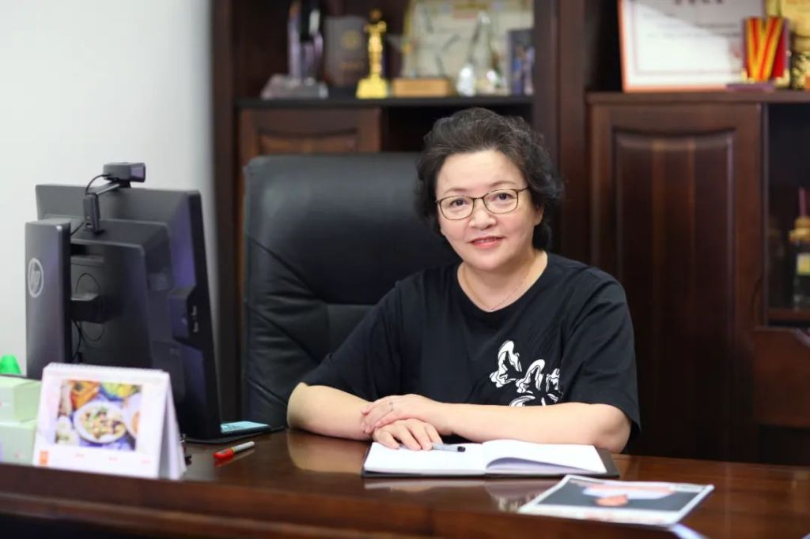
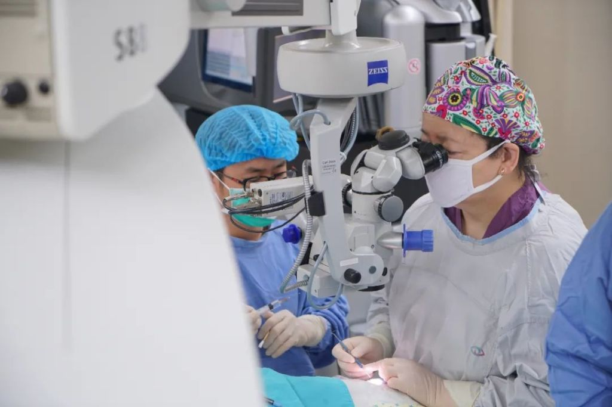
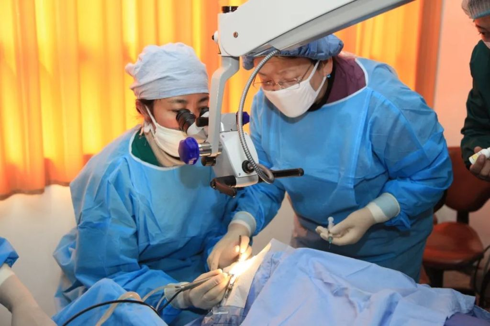
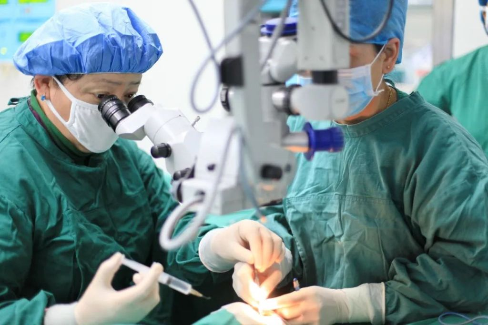
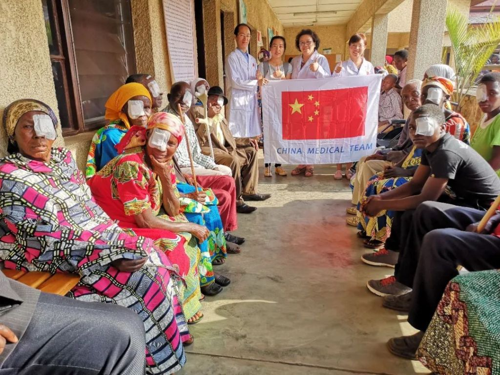

人物简介：张铭志，汕头大学·香港中文大学联合汕头国际眼科中心的常务副院长。曾获得中美眼科学会金苹果奖、“亚太眼科学会防盲杰出贡献奖”“亚太眼科学会成就奖”“全国巾帼建功标兵”“汕头市2019优秀科技工作者”等荣誉称号，入围《中国名医百强榜》眼科榜单。在国内外知名眼医学期刊发表论文215篇，其中被SCI收录论文116篇，共计培训眼科界优秀人才4000余人，荣获第二届全国创新争先奖。
挑大梁立潮头 用人才兴院
90年代末，国际眼科技术设备飞速发展，新技术需要领头人。1998年，张铭志受新加坡著名眼科专家林少明教授的邀请，到新加坡眼科研究所做访问学者。在此期间，她孜孜不倦地学习钻研，吸纳了国际最前沿的眼科技术，积累了新加坡大量先进的临床经验。她还多次出席了世界各大国际性眼科学术会议，并代表中国眼科界作主题演讲，收获了“新加坡眼科研究贡献奖”。
2005年，张铭志作为专业人才被引进到汕头国际眼科中心，正式接过常务副院长的接力棒。这位医院新任“掌门人”心中已蕴藏着雄才大略，她要在自己这一任上让这家年轻的眼科医院跻身国内领先行列。

刚上任，张铭志便察觉到，早期医院引进的人才流动性过大，这势必造成人才队伍建设后继乏力，不利于医院的长远发展。考虑到医院所处的地理位置，张铭志提出了人才引进和自我培养并举的发展思路。于是，她力挑“大梁”，亲自担任了白内障专科和青光眼专科的学科带头人，走上讲台，挂帅授课传技。
随着各大专科的发展，好消息接踵而来：医院先后被教育部定为眼科学博士授予单位；中华医学会白内障手术培训基地；国际眼科学会ICO眼科医师中国首个考试基地；广东省眼专科医师培训基地；广东省白内障区域性防盲培训基地……

勇于创新开拓 深耕科研之路
张铭志上任后主抓的第二件工作是科研。第一年，她就带头让医院实现了国家自然科学基金科研立项课题“零的突破”。在她的带动下，医院的科研学术氛围日益浓厚。医院推行“One Doctor，One Project”理念，鼓励年轻医生开展临床研究，探索新技术、新项目。她常常身体力行，为渴望作科研的人才“跑”课题，创设条件支持年轻医生参加各类国内国际学术交流。

多年来，张铭志主动承担国家自然科学基金、国际合作项目及省级科研项目13项，在国内外知名眼医学期刊发表论文215篇。她坚持基础研究与临床研究相结合、基础研究为临床提供探索发病机制和治疗思路的理念，在遗传性白内障、青光眼的分子生物学、基因型-表型关联分析以及基因间相互作用的上位效应等方面进行了深入研究。与国际多中心合作在青光眼患者中新确认了一个在7q31的新变异，该发现对于了解基因突变在原发性开角型青光眼的发病过程中有重要作用，成果发表在《Nature genetics》上，影响因子36.377。并在国际上率先开展白内障超声乳化手术治疗合并白内障青光眼的手术治疗的研究，手术方法已纳入该疾病的诊疗指南。
长期以来，张铭志非常关注青少年眼健康，把探索如何更加科学规范地指导儿童、青少年科学护眼防控近视作为她科研领域的重要方向。2007年，她率领团队承担了英国牛津大学的国际基金项目——《潮汕地区青少年屈光服务的战略性研究》。在研究中，她全面系统对潮汕地区青少年近视的发生情况及防治规律进行了创新性的科学研究，首次将行为学与视觉发生发展的关联纳入研究范围。研究成果发表在《British Medical Journal》上，获得全球眼科学界的广泛关注。

随着粤港澳大湾区建设提速，张铭志察觉到汕港眼科学合作将会迎来更广阔的空间，她及时调整发展策略，力促汕头国际眼科中心与香港中文大学双方团队在医疗、科研、教学、培训等多领域的深度合作，建立诺贝尔奖得主、美国科学院院士Andrew Schally教授工作站。又与英国牛津大学、美国普渡大学、迈阿密大学、加拿大曼尼托巴大学、荷兰格罗宁根大学、冰岛deCODE基因中心、新加坡国立眼科中心等国（境）外知名大学或科研机构建立长期合作关系，联合培养高层次人才。她时时捕捉眼科学研究国际最前沿的信息，为医院未来建立粤港联合眼科实验室和联合临床研究中心打下坚实的基础。
授人渔培基医，建技术输出平台
在长期的眼科医疗和教学实践中，张铭志倡导建立“授人以渔，以有余补不足，建立技术输出平台”的理念，在全国范围内形成三级精准防盲扶持体系，并独创出基层医师规范化培训新模式。
从2005年起，张铭志和团队先后参与了“关心是潮流”“中华健康快车”“援藏光明行”“汕头国际眼科中心—蔡司白内障显微手术培训”等八大防盲扶贫、扶持项目，并根据八大项目的不同特点分别规划，使汕头国际眼科中心成为国内重要的基层眼科医生培训基地，让技术继续生根开花结果，为更多贫困地区的眼疾患者带去福音。
截至当下，张铭志和团队足迹遍及全国22省、5个自治区、4个直辖市、一个特别行政区共122个地区；扶贫白内障手术量累计达24万例，居全国首位。同时，在她带领下，汕头国际眼科中心开通了覆盖全国21省49个点的远程眼科学教育网络，以汕头国际眼科中心为枢纽，培养各地基层医生3964名，其中可独立开展手术的基层医生525名，独立完成手术量约24.1万例，使汕头国际眼科中心被上级主管部门和全国许多基层眼科医生誉为中国白内障显微手术培训的“黄埔军校”。凭借多年来在眼科医生的培养及继续教育的突出成就，2019年，张铭志获得了由中华眼科学会和中美眼科学会共同颁发的金苹果奖，该奖旨在表彰为眼科事业的发展和眼科医生的培养及继续教育有突出贡献的眼科医生，是亚太地区眼科的最高荣誉之一。
在张铭志的大爱行为感召下，一批批眼科同仁加入志愿者行列，坚定地跟随她援藏、援疆、援非，纵横几百万里，为千千万万的贫困患者重现光明送去一声声福音，为基层医院医生送去最前沿的眼科诊疗技术。

“用心去关爱在黑暗中生活的人，将技术传承给创造未来的人。”这是张铭志在39年行医生涯中始终践行的初心。她表示，时代的洪流浩荡奔涌，科技的发展日新月异。我们这一代“科技人”是幸运的，我们见证了祖国科技的历史性跨越腾飞，同时也亲身参与了科技创新领域的每一步开拓。我们攻坚克难，科技报国，以科技杠杆，有力推动了经济和社会的发展，我们既是“筑梦者”，也是“践行者”。让我们共同携手，只争朝夕，不负韶华！
来源：广东科技报作者：麦博